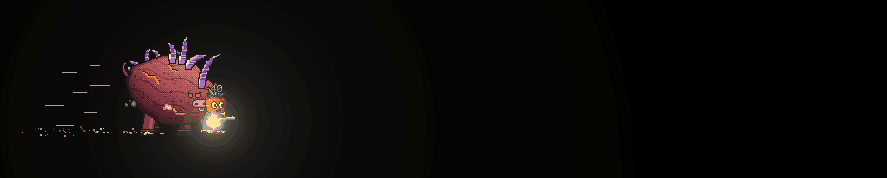

Sweet Potato
The top-room boss of the Burrow Encounter, a huge rosy sweet potato bull that chains charges into the walls, sends shockwaves along the floor and ambushes from underground.
Behaviour
The Sweet Potato is the Potato Bull's big angry cousin: a huge rosy sweet potato, tapered at both ends and scarred with glimpses of bright orange flesh, with a crown of gnarly purple sprouts and two great sprout horns. It stands about one and a half times a Potato Bull's height and is much wider.
Like the bull, it stays on the ground. It trots after the nearest player at up to 36 px/s, hops up steps no taller than 26 px, and turns round slowly (0.4 s). It stops 60 px from its target to wait for an attack, and shuffles back if a player gets closer than 40 px. Bullets barely nudge it (3 px/s per hit).
It has two attacks it chooses between: a charge combo and a burrow ambush. The first attack comes 1.8 s after it appears, then one every 1.2 s to 2.2 s. The burrow has its own timer: the first is ready after 7 s, then one every 10 s. When both are ready it picks the burrow with a chance of 0.4; it always burrows if its target is somewhere it can't charge (up on a ledge, say), and never dives while standing on a plank.
Attacks
Charge combo
It charges when a player is in front of it, between 40 px and 600 px away, roughly level with it (feet no more than 40 px apart vertically), with no wall in between. A combo chains 2 charges to 3 charges.
| Phase | Lasts | What you see |
|---|---|---|
| Wind-up | 1.1 s | It paws the ground, snorts, lowers its head, and its eyes go red. This is the telegraph for the whole combo. |
| Charge | Until it passes you, or 2.2 s | It barrels straight ahead at up to 300 px/s. If you run on ahead it keeps going after you, braking only 80 px past you. |
| Re-paw | 0.5 s | Between charges it skids to a quick stop, swings round to face its target, snorts and goes again. |
| Last charge | Until it hits a wall, or 4 s | The last charge of a combo does not brake for anyone: it runs on into the wall. |
| Recover | 0.8 s | After a skid, a stun or an eruption it shakes itself off and turns round. |
Each charge that runs into a player deals 40 hp (players have 100 hp) and launches them along the charge and upward, at most once per charge per player.
Wall slam and shockwave

Running into a wall at 120 px/s or more is a slam. It bounces off and is stunned for 3 s under dizzy stars, which is the main punish window. The slam also sends a wave of dirt and glowing orange rolling along the floor both ways from the impact, at 230 px/s.
The wave is 18 px tall: a carrot whose feet are above that clears it, so jump it. It dies out after 760 px, or at a wall or the floor's edge. A wave that rolls through a player deals 25 hp and launches them, once per wave.
Hitting a wall slower than 120 px/s just stops it, with no stun and no wave.
Burrow ambush
| Phase | Lasts | What you see |
|---|---|---|
| Dive | 0.75 s | It crouches and digs in, then vanishes underground. |
| Burrow | Up to 3 s | A dirt mound with its crown poking out tunnels toward its target at 170 px/s, with a rumble. It never tunnels off a ledge. |
| Telegraph | 0.9 s | It stops under its target and a dirt circle cracks open and glows. Get out of it. |
| Erupt | Until it lands | It bursts out of the ground in a geyser of dirt. |
The eruption hits anyone within 44 px either side of the spot, up to 120 px above the floor, so a normal jump does not clear it. It deals 35 hp and launches them sideways away from the spot and high into the air.
While it is underground it cannot be hit at all.
Enrage
When its health drops to 0.5 of its maximum, it stops at the next chance and roars for 1.6 s, shaking the screen. Its scars split into glowing caramelized cracks that vent steam. From then on:
| What | Multiplier or change |
|---|---|
| Charge speed | 1.25x |
| Charge acceleration | 1.3x |
| Wind-up and re-paw time | 0.7x |
| Extra charges per combo | 1 charges |
| Time between attacks and between burrows | 0.6x |
| Burrow speed | 1.3x |
| Eruption telegraph | 0.85x |
| Shockwave speed | 1.2x |
Headshots
The weak spot is its brow and the roots of its crown, on the front-top of its head. While it is stunned, the weak spot grows down over most of its body (2.4x its usual height), so nearly every shot counts as a headshot. Underground it has no hitbox at all.
Strategy
- Fight with a wall behind you. Sidestep or jump each charge, and the last one of the combo will slam that wall.
- When it slams, jump the shockwave first, then pour damage into the stunned boss.
- Count the charges: only the last one of a combo hits the wall, and the re-paws are short.
- When the ground rumbles and a mound heads your way, keep moving. When the circle cracks, leave it sideways; jumping is not enough.
- Dashing through a charge, a wave or an eruption dodges it: dash i-frames beat every attack in the game.
- After the enrage everything comes faster, but the combos are longer, so the wall slam (and the stun) still comes.
Co-op
The host runs the Sweet Potato's AI and physics and streams its state (charge direction, charge number, combo progress, enraged) to everyone else. The charge, slam, dive, crack, eruption and enrage are events every machine plays. Each machine checks only its own carrot: against the charge (once per charge), against each shockwave (simulated locally, once per wave) and against each eruption, so a hit always matches what that player saw.
The boss charges at the nearest player, so in a squad one player can bait combos into a wall while the others shoot.
Death
It bursts like an overdone roast: a hot flash, glowing roasted chunks and skin raining down, orange mash, its crown flying off, and a great column of steam that lingers.
Appearances
- Burrow Encounter: the boss of the top room, lit by green torches. When a player gets far enough in, the doors shut and the Sweet Potato arrives with two zombie adds (Zombie) that keep coming back while the fight is on.
- Killing it opens the doors, takes the adds down and drops the room's green key orb (its buff is called SPUD RUSH). Carry it back to the green pedestal in the hub. Each orb placed there breaks part of The Ginger's shield and unlocks more of its health.
- The Ginger Shade may haunt its room during the fight, sniping at the players there.
Design notes
The Sweet Potato scales up the Potato Bull's lesson: the charge is dangerous in the open but a wall turns it into a damage window. Combos and the shockwave add a dodge-then-jump rhythm, and the burrow stops players from simply camping a wall or a ledge.
Tunable parameters
These are read straight from the game's files, so they are always the current values. Open the file in the Godot Inspector to change them.
Stats
Edit styles/enemies/sweet_potato.tres · fields defined in scripts/enemy_stats/sweet_potato_stats.gd
| Parameter | Value | Range | What it does |
|---|---|---|---|
| Health | |||
max_hp | 1800 hp | 100 to 6000 | Hit points (before the encounter's hp_scale). The potato bull has 300, the corn ogre 500. |
hit_push | 3 px/s | 0 to 100 | How far a bullet nudges it while it trots (it's very heavy). |
| Movement | |||
trot_speed | 36 px/s | 0 to 120 | Top speed of the heavy waddling trot toward the nearest player. |
trot_accel | 340 px/s² | 50 to 3000 | How quickly the trot gets up to speed (and slows down again). |
keep_distance | 60 px | 0 to 300 | Stops trotting this close to its target (feet to feet) and waits for a run at them. |
turn_time | 0.4 s | 0 to 2 | Time to turn round to face the other way (a slow, heavy turn). |
hop_speed | 320 px/s | 0 to 600 | Upward speed of a heavy hop up a low step in its way. |
gravity | 1200 px/s² | 200 to 3000 | Gravity on it, and the fastest it falls. |
max_fall | 520 px/s | 100 to 1200 | |
hop_max | 26 px | 0 to 80 | The tallest step it will hop up onto while trotting (anything higher stops it). |
| Charge | |||
charge_range | 600 px | 0 to 1200 | Starts a charge combo at a player at most this far away (horizontally) ... |
charge_min_range | 40 px | 0 to 300 | ... and at least this far (closer than that it shuffles back a step first). |
charge_height | 40 px | 0 to 200 | ... and only if they're roughly level with it: feet no more than this far apart vertically. |
windup_time | 1.1 s | 0.2 to 3 | The first wind-up telegraph of a combo (pawing, snorting, head down) before it goes. |
charge_speed | 300 px/s | 60 to 800 | Top charging speed and how fast it gets there. |
charge_accel | 1000 px/s² | 100 to 5000 | |
overshoot | 80 px | 0 to 300 | A combo charge (not the last) keeps going this far past where the player was before it brakes. |
charge_max_time | 2.2 s | 0.3 to 6 | A combo charge brakes after this long even if it hasn't passed the player. |
final_charge_max_time | 4 s | 0.3 to 8 | The last charge of a combo doesn't brake for the player: it runs until it hits a wall, or this long. |
skid_decel | 560 px/s² | 50 to 3000 | How hard it brakes in the skid after the last charge. |
stun_speed | 120 px/s | 0 to 600 | Hitting a wall at least this fast is a slam (stun and shockwave); slower, it just stops. |
stun_time | 3 s | 0 to 10 | How long it's dizzy after a wall slam (the punish window; its weak spot grows meanwhile). |
recover_time | 0.8 s | 0 to 3 | Shaking it off and turning round after a skid, a stun or an eruption. |
cooldown_min | 1.2 s | 0 to 10 | Time between attacks (random in this range), and before the first one after it appears. |
cooldown_max | 2.2 s | 0 to 10 | |
first_charge | 1.8 s | 0 to 10 | |
| Combo | |||
combo_min | 2 charges | 1 to 6 | How many charges it chains in a row (random in this range). The last one runs into the wall. |
combo_max | 3 charges | 1 to 6 | |
repaw_time | 0.5 s | 0.05 to 2 | The short re-paw between combo charges: it turns, re-aims at its target and goes again. |
combo_skid_decel | 1100 px/s² | 50 to 4000 | How hard it brakes between combo charges (a quick, sharp skid). |
| Shockwave | |||
wave_speed | 230 px/s | 30 to 800 | A wall slam sends a wave of dirt rolling along the floor both ways from the impact. Jump it. |
wave_height | 18 px | 2 to 60 | Height of the wave (a carrot whose feet are above this clears it) and its width. |
wave_width | 34 px | 4 to 80 | |
wave_range | 760 px | 20 to 2000 | It dies out after rolling this far (or at a wall or the floor's edge). |
wave_damage | 25 hp | 0 to 100 | Damage to a player it rolls through (once per wave per player), and the launch. |
wave_knock_x | 180 px/s | 0 to 1000 | |
wave_knock_y | 400 px/s | 0 to 1000 | |
| Burrow | |||
first_burrow | 7 s | 0 to 60 | Seconds before its first burrow ambush, and between ambushes. |
burrow_cooldown | 10 s | 0 to 60 | |
burrow_chance | 0.4 | 0 to 1 | When a burrow is ready, the chance it picks one over a charge combo (it always burrows when it can't charge, e.g. its target is up on a ledge). |
dive_time | 0.75 s | 0.1 to 3 | The dive: crouching and digging in before it vanishes underground. |
burrow_speed | 170 px/s | 20 to 600 | The dirt mound's speed toward its target, and the longest it tunnels before surfacing anyway. |
burrow_max_time | 3 s | 0.3 to 10 | |
telegraph_time | 0.9 s | 0.1 to 3 | The cracking dirt circle under the target before it erupts (the time to get out of it). |
erupt_radius | 44 px | 5 to 150 | The eruption's reach: half its width, and how high above the floor it hits. |
erupt_height | 120 px | 10 to 300 | |
erupt_damage | 35 hp | 0 to 100 | Damage to a player caught on the spot, and the launch (sideways away from it, and up). |
erupt_knock_x | 200 px/s | 0 to 1000 | |
erupt_knock_y | 560 px/s | 0 to 1200 | |
erupt_jump | 430 px/s | 0 to 1000 | How hard it bursts up out of the ground. |
| Enrage | |||
enrage_at | 0.5 | 0 to 1 | It enrages once its health drops to this fraction of its maximum. |
roar_time | 1.6 s | 0 to 5 | The roar when it enrages (it stands its ground meanwhile). |
enrage_speed_mult | 1.25x | 1 to 3 | Enraged: charge speed and acceleration multipliers. |
enrage_accel_mult | 1.3x | 1 to 3 | |
enrage_windup_mult | 0.7x | 0.2 to 1 | Enraged: wind-up and re-paw time multiplier (shorter tells). |
enrage_extra_charges | 1 charges | 0 to 4 | Enraged: extra charges added to each combo. |
enrage_cooldown_mult | 0.6x | 0.1 to 1 | Enraged: cooldown multiplier (between attacks and burrows). |
enrage_burrow_mult | 1.3x | 1 to 3 | Enraged: burrow speed multiplier, and telegraph time multiplier. |
enrage_telegraph_mult | 0.85x | 0.3 to 1 | |
enrage_wave_mult | 1.2x | 1 to 3 | Enraged: shockwave speed multiplier. |
| Damage | |||
charge_damage | 40 hp | 0 to 100 | Damage to a player it runs into while charging (players have 100). Once per charge per player. |
knock_x | 460 px/s | 0 to 1000 | The launch: sideways along the charge, and upwards. |
knock_y | 360 px/s | 0 to 1000 | |
stun_weak_spot | 2.4x | 1 to 4 | While stunned, its weak spot (head box, headshots x2) grows to this many times its normal height. |
| Feel | |||
footfall_shake | 0.3 | 0 to 1 | Screen shake per charging footfall (scaled down with distance), a wall slam, an eruption, the enrage roar, the underground rumble and the death. |
slam_shake | 1 | 0 to 1 | |
erupt_shake | 0.9 | 0 to 1 | |
roar_shake | 0.8 | 0 to 1 | |
burrow_shake | 0.18 | 0 to 1 | |
death_shake | 1 | 0 to 1 | |
flash_gap | 0.25 s | 0.05 to 1 | Least time between white hit flashes, so the SMG doesn't strobe it, and how bright and long one is. |
flash_brightness | 1.3x | 1 to 2 | |
flash_time | 0.05 s | 0.01 to 0.2 | |
crack_glow | 1.8 | 0.5 to 5 | Glow (HDR intensity) of its caramelized cracks once enraged, and of the eruption's dirt circle. |
steam_gap | 0.35 s | 0.05 to 3 | Seconds between steam vents from its cracks once enraged. |
debris_gravity | 560 px/s² | 0 to 2000 | Gravity on the roasted chunks, skin and clods as they bounce and settle. |
debris_life | 3.5 s | 0.2 to 15 | How long the chunks lie around before they blink out. |